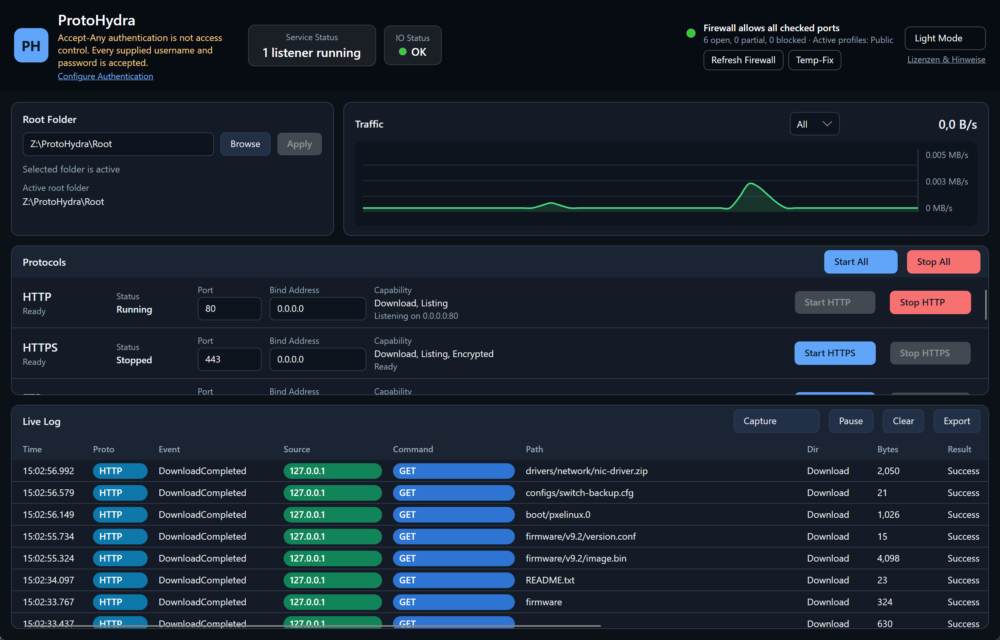

TFTP, FTP, FTPS, SFTP, SCP, HTTP and HTTPS server for Windows, in one portable EXE
ProtoHydra serves a single folder over seven protocols at the same time. No installation, no Windows service, no .NET runtime to deploy. Built for the work that happens next to the rack: flashing network gear, bootstrapping appliances, backing up device configs and serving PXE boot files. A built-in serial console drives the device console in the same window.
Download ProtoHydra.exe View source on GitHub

What system administrators use it for
One tool instead of a different server per maintenance task.
Firmware upgrades
Switches, routers, FC fabrics, WLAN controllers and storage appliances each expect TFTP, SCP or SFTP. Offer the firmware folder over all of them at once and stop guessing which one the device accepts.
Config backup and restore
copy running-config tftp: or an SCP upload lands directly in the root folder. The restore takes the same path back.
PXE and network boot
TFTP delivers pxelinux.0, ipxe.efi and WDS stages while HTTP moves the large WIM, Squashfs and ISO images far faster.
Air-gapped networks
When no central file server is reachable, a maintenance laptop bridges the gap without installing anything permanently.
Drivers and installers
An on-site technician or a device pulls files over HTTP/HTTPS in the browser or by script, with a clickable directory listing.
Client interop testing
Check reproducibly how a client behaves against FTP, FTPS, SFTP or classic SCP, including a plaintext capture of the protocol traffic.
Supported protocols
Each one starts and stops on its own, port and bind address are configurable.
| Protocol | Download | Upload | Listing | Authentication | Encryption | Default port |
|---|---|---|---|---|---|---|
| TFTP | yes | yes | no | none (protocol limitation) | none | 69/UDP |
| FTP | yes | yes | yes | accept-any or defined users | none | 21 |
| FTPS | yes | yes | yes | accept-any or defined users | TLS | 990 |
| SFTP | yes | yes | yes | accept-any or defined users | SSH | 22 |
| SCP | yes | yes | no | accept-any or defined users | SSH | 22 (shared) |
| HTTP | yes | no | HTML | accept-any or Basic | none | 80 |
| HTTPS | yes | no | HTML | accept-any or Basic | TLS | 443 |
Features that matter during a maintenance window
- One shared root folder for all protocols, switchable while services run.
- Live log with source IP, command, path, bytes, result and duration per operation, failures in red.
- Transfer capture writes a plaintext log next to the EXE where every line starts with INFO or ERROR.
- IO status catches missing permissions, unplugged USB media, un-hydrated OneDrive placeholders and full disks.
- Firewall status checks per active Windows Firewall profile whether the configured ports are actually reachable.
- Temporary firewall rule opens the active ports elevated and removes the rule again on exit.
- Automatic crypto bootstrap generates the self-signed X.509 certificate and SSH host key on first start.
- Safe path handling blocks root escapes and symlinks or reparse points leading out of the root.
- Port conflict detection reports occupied ports before a service starts.
- Light and dark theme, switchable at runtime.
Serial console for COM ports
The device console and the file transfer in the same window.
- Port picker with device names read from the Windows device tree, so you see
COM7 — USB Serial Portinstead of a bare number. - Parameters from drop-downs: baud rate 300 to 921600, data bits, parity, stop bits, flow control and the Enter sequence (CR, LF, CR LF).
- Copy and paste like PuTTY: selecting copies, right-click pastes, plus
Ctrl+Shift+CandCtrl+Shift+V. - VT100/xterm emulation with colours, cursor addressing, alternate screen and 5000 lines of scrollback.
- Break key holds the line in break state for 300 ms, the interrupt ROM monitors and bootloaders listen for.
- Line indicators for CTS, DSR, DCD, DTR and RTS, RX and TX counters, and a session log next to the other logs.
Quick start
- Download
ProtoHydra.exefrom the latest release and run it. Run it as administrator if you need the default ports below 1024. - Pick the root folder to serve. It is exposed as
/across every protocol. - Start the protocols the device expects, individually or with Start All.
- Trigger the transfer on the device and follow it in the live log.
# TFTP
tftp <host> 69 get <file>
tftp <host> 69 put <file>
# SFTP / SCP
sftp anyuser@<host>
scp -O <file> anyuser@<host>:/target/ # classic SCP (exec mode)
scp -O -r <folder> anyuser@<host>:/target/ # recursive
# Cisco IOS, firmware and config
copy tftp: flash:
copy running-config tftp:Security notice
ProtoHydra is not a hardened production server. By default it uses accept-any authentication: every username and password is accepted and there is no access control. That is deliberate for maintenance and bootstrapping, where devices send fixed or empty credentials.
Optionally you can switch to defined users with passwords stored as Argon2id hashes, effective immediately for FTP, FTPS, SFTP, SCP and HTTP Basic auth. TFTP stays unauthenticated because the protocol has no authentication.
Run it in a maintenance or device network behind a firewall, never on the open internet, and only for as long as the transfer takes.
Frequently asked questions
TFTP, SFTP and SCP questions that come up in the field.
Is ProtoHydra a free TFTP server for Windows 10 and Windows 11?
Yes. ProtoHydra is open source under the MIT license, runs on Windows 10 and Windows 11 (x64) and adds FTP, FTPS, SFTP, SCP, HTTP and HTTPS next to TFTP.
Do I have to install anything?
No. A single EXE, no setup, no Windows service, no .NET installation. It also runs from a USB stick or a maintenance toolkit folder.
How do I push firmware to a switch or router over TFTP?
Pick the firmware folder as root, start TFTP and trigger the transfer on the device, for example copy tftp: flash: on Cisco IOS. If the device refuses TFTP, enable SCP or SFTP in the same window. The folder stays the same.
How do I back up a network device configuration?
Run copy running-config tftp: on the device. The file lands directly in the root folder. The restore takes the same path back, or goes over SFTP or FTP instead.
Is ProtoHydra usable for PXE and network boot?
Yes. TFTP serves bootloaders such as pxelinux.0 or ipxe.efi, HTTP serves the large images (WIM, Squashfs, ISO) at much higher throughput.
Why does ProtoHydra ask for administrator rights?
Only for ports below 1024 (69, 21, 22, 80, 443). Without elevation, switch to high ports in the UI, for example 6969, 2121, 2222 or 8080.
Does SCP work with WinSCP and OpenSSH?
Yes. The SCP service handles classic scp -O (exec mode) and the shell-based SCP mode of WinSCP. Modern OpenSSH clients use SFTP internally for scp without -O, which is served as well.
Can I also reach the serial console of a device?
Yes. The Serial Console tab opens a VT100/xterm terminal on a COM port, with port and parameter drop-downs, PuTTY-style copy and paste, a break key, line indicators and session capture. Console session and file transfer live in the same window.
Is there a Linux or macOS build?
Not at the moment. The published artifact is a self-contained EXE for Windows x64.
How is this different from Tftpd64, FileZilla Server or OpenSSH for Windows?
Those tools each cover one protocol or protocol family and are usually installed or registered as a service. ProtoHydra puts seven protocols on the same folder, starts portable and shows every file operation across all protocols in one live log.
Can I run ProtoHydra permanently?
No. It is a maintenance tool. By default it accepts any username and password, so it belongs in a maintenance network behind a firewall and should run only for the duration of a transfer.